건축설비기사 (2014-03-02 기출문제)
1과목: 건축일반
1. 그림과 같은 환기 방식이 적합하지 않은 실은?
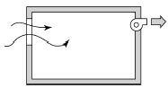
- 화장실
- 수술실
- 주방
- 욕실
(정답률: 96%)

2. 트러스 구조에 관한 설명으로 옳지 않은 것은?
- 절점은 강절점으로 부재를 삼각형으로 구성하여야 한다.
- 접합부 설계는 접합부에 모이는 각 부재의 중심선을 1점으로 교차시켜야 한다.
- 압축력이 작용하는 부재는 짧게, 인장력이 작용하는 부재는 길게 설계하는 것이 좋다.
- 입체 트러스는 큰 간사이 구조에 이용되지만, 구조해 석이 어려운 단점이 있다.
(정답률: 69%)
3. 아파트 건축의 각 평면 형태에 대한 설명으로 옳지 않은 것은?
- 편복도형은 복도가 개방되므로 각 호의 프라이버시에 불리하다.
- 집중형은 대지의 이용률을 높이기 위해 채택하는 형식이다.
- 중복도형은 프라이버시 확보가 어려우므로 독신자 주거용으로 채택되기 어렵다.
- 계단실형은 각 단위 주택의 독립성을 유지 할 수 있다.
(정답률: 87%)
4. 시티 호텔(city hotel)에 속하지 않는 것은?
- 커머셜 호텔
- 레지덴셜 호텔
- 터미널 호텔
- 산장 호텔
(정답률: 93%)
5. 리빙키친(Living Kitchen)의 가장 큰 장점은?
- 조리시간을 단축시킨다.
- 주부의 가사노동을 경감시킨다.
- 급배수 설비 설치비용을 절감한다.
- 침실과의 접촉이 좋게 된다.
(정답률: 80%)
6. 측창채광(side lighting)의 특성 중 옳지 않은 것은?
- 통풍 및 차열(遮熱)에 불리하다.
- 투명부분을 개방용으로 대치할 수 있다.
- 주변상황에 큰 영향을 받는다.
- 조도분포가 불균형하여 넓은 실에는 불리하다.
(정답률: 74%)
7. 실내조명 설계에서 가장 우선적으로 검토해야 하는 것은?
- 개략적인 조명계산을 실시한다.
- 소요조도를 결정한다.
- 소요전등의 개수를 결정한다.
- 조명방식 및 조명기구를 선정한다.
(정답률: 96%)
8. 마루바닥을 시공할 때 적용되는 쪽매의 종류가 아닌것은?
- 맞댄쪽매
- 반턱쪽매
- 연귀쪽매
- 제혀쪽매
(정답률: 75%)
9. 병원의 건축형식이 아닌 것은?
- 분관식
- 집중식
- 다익형
- 클러스터형
(정답률: 70%)
10. 커머셜 호텔(commercial hotel) 계획에서 크게 고려하지 않아도 되는 것은?
- 주차장
- 발코니
- 레스토랑
- 연회장
(정답률: 91%)
11. 벽돌쌓기에서 화란식 쌓기의 경우 모서리 또는 끝부분에 사용되는 벽돌의 마름질 형태는?
- 칠오토막
- 이오토막
- 반토막
- 반반절
(정답률: 79%)
12. 목구조에서 기둥과 평보의 접합부분에 버팀대를 설치하는 목적은?
- 기둥의 압축내력을 보강하기 위해
- 절점의 강성을 높이기 위해
- 보의 흔들림을 방지하기 위해
- 수평하중과 수직하중을 기둥으로 집중시키기 위하여
(정답률: 58%)
13. PS 강재의 조건 중 옳지 않은 것은?
- 고장력 강재이어야 한다.
- 콘크리트와의 부착력이 커야 한다.
- 드럼에서 풀어 사용할 때 잘 펴져야 한다.
- 릴랙세이션(relaxation)이 커야 한다.
(정답률: 85%)
14. 표면결로 방지 대책이 아닌 것은?
- 실온을 높인다.
- 벽의 단열성을 좋게 하여 열관류 저항을 크게 한다.
- 실내수증기압을 낮추어 실내공기의 노점온도를 낮게 한다.
- 방습재는 저온측(실외)에, 단열재는 고온측(실내)에 배치한다.
(정답률: 74%)
15. 지붕평면 중 합각지붕은?
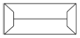

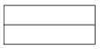
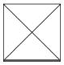
(정답률: 91%)
16. 잔향시간은 실내에 일정한 세기의 음을 공급하여 정상상태가 된 후, 음원을 정지시키고 나서 실내의 평균에너지 밀도가 처음 값에서 얼마 감쇠하는데 소요되는 시간으로 산정하는가?
- 40dB
- 50dB
- 60dB
- 70dB
(정답률: 92%)
17. 음의 명료도에 관한 설명으로 옳지 않은 것은?
- 명료도는 잔향시간이 길어지면 좋아진다.
- 요해도는 명료도보다 비교적 높은 값을 갖게 된다.
- 주위의 소음이 크면 명료도는 감소한다.
- 실용적에 따라 명료도는 달라질 수 있다.
(정답률: 87%)
18. 상점의 쇼윈도(show window)에 관한 설명으로 옳지 않은 것은?
- 쇼윈도의 크기는 상점의 종류와는 관계가 없다.
- 쇼윈도의 바닥높이는 상품의 종류에 따라 다르다.
- 상점규모가 2 ㆍ 3층인 경우, 쇼윈도를 입체적으로 취급하여 한눈에 상점에 대한 이미지를 강하게 주는 경우가 있다.
- 쇼윈도 내부의 밝기를 인공적으로 높게 함으로써 쇼윈도의 반사를 방지할 수 있다.
(정답률: 90%)
19. 기초의 부동침하를 방지하는데 효과적인 방법이 아닌 것은?
- 기초 상호간을 지중보로 연결한다.
- 가급적 건물의 중량을 무겁게 한다.
- 구조 전체의 하중을 기초에 균등히 분포시킨다.
- 지하실을 강성체로 설치한다.
(정답률: 94%)
20. 척도조정(modular coordination)에 대한 설명 중 옳지 않은 것은?
- 척도조정이라 함은 모듈을 사용하여 건축 전반에 사용되는 재료를 규격화 하는 것을 말한다.
- 척도조정을 적용할 경우 설계 작업이 단순화되고 간편해진다.
- 국제적으로 같은 척도조정을 사용하여도 건축 구성재의 국제 교역은 불가능하다.
- 척도조정의 단점은 건물의 배치 및 외관이 단순해지는 경향이다.
(정답률: 91%)
2과목: 위생설비
21. 내식성 및 가공성이 우수하며 배관 두께별로 K, L, M형으로 구분하여 사용되는 배관 재료는?
- 동관
- 스테인리스 강관
- 일반배관용 탄소강관
- 압력배관용 탄소강관
(정답률: 83%)
22. 지하층을 제외한 층수가 8층인 백화점에 스프링클러 설비를 설치할 경우, 스프링클러설비의 수원의 저수량은 최소 얼마 이상이 되도록 하여야 하는가? (단, 설치 헤드수는 30개이다.)
- 24m3
- 48m3
- 72m3
- 96m3
(정답률: 76%)
23. 다음의 급수방식 중 설비비 및 유지관리 비용이 가장 저렴한 방식은?
- 수도직결방식
- 고가수조방식
- 압력수조방식
- 펌프직송방식
(정답률: 86%)
24. 가스계량기는 전기개폐기 및 전기계량기로부터 최소 얼마 이상의 거리를 유지하여 설치하여야 하는가?
- 30cm
- 60cm
- 90cm
- 120cm
(정답률: 85%)
25. 배수배관에 있어서 한계 유속은 일반적으로 얼마인가?
- 0.5m/s
- 1.5m/s
- 2.5m/s
- 3.5m/s
(정답률: 71%)
26. 배수트랩에 관한 설명으로 옳지 않은 것은?
- 이중 트랩이 되지 않게 한다.
- 트랩은 위생기구에 접근시켜 설치한다.
- 봉수깊이가 깊으면 통수능력이 증가된다.
- 벨트랩은 주로 바닥 배수구용 트랩으로 이용된다.
(정답률: 89%)
27. 배관 이음재료 중 시공한 후 배관 교체 등 수리를 관리하게 하기 위해 사용하는 것은?
- 티(tee)
- 부싱(bushing)
- 플랜지(flange)
- 리듀서(reducer)
(정답률: 84%)
28. 통기배관에 관한 설명으로 옳지 않은 것은?
- 통기관은 우수관에 접속하지 않는다.
- 결합통기관은 배수수직관과 통기수직관을 연결하는 통기관이다.
- 간접 배수계통의 통기관은 잡배수 계통의 통기수직관에 접속한다.
- 신정통기관은 배수수직관의 상부를 연장하여 대기에 개방한 통기관이다.
(정답률: 64%)
29. 수도 본관에서 수직높이 1m인 곳에 대변기의 세정밸브를 설치하였다. 이 세정밸브의 사용을 위해 필요한 수도본관의 최저 압력은? (단, 수도직결방식이며, 본관에서 세정밸브까지의 마찰 손실수두는 0.02MPa, 세정밸브의 최저필요압력은 0.07MPa 이다.)
- 0.07MPa
- 0.09MPa
- 0.10MPa
- 0.19MPa
(정답률: 57%)
30. 연결송수관설비에 관한 설명으로 옳지 않은 것은?
- 주배관의 구경은 100mm 이상의 것으로 한다.
- 방수구의 호스접결구는 바닥으로부터 높이 0.5m 이상 1m 이하의 위치에 설치한다.
- 펌프의 양정은 최상층에 설치된 노즐선단의 압력이 0.17MPa 이상의 압력이 되도록 한다.
- 방수구는 연결송수관설비의 전용방수구 또는 옥내소화전 방수구로서 규격 65mm의 것으로 설치한다.
(정답률: 58%)
31. 저탕조의 용량이 2m3이고 급탕배관 내의 전체 수량이 1m3일 때 개방형 팽창탱크의 용량은? (단, 급수의 밀도는 1.0g/cm3이고, 온수의 밀도는 0.983g /cm3 이다.)
- 0.03m3
- 0.04m3
- 0.⑤m3
- 0.06m3
(정답률: 58%)
32. 유체의 점성에 관한 설명으로 옳지 않은 것은?
- 유체의 동점성계수는 점성계수와 밀도와의 비로 표시된다.
- 기체의 점성계수는 일반적으로 온도의 상승과 함께 증가한다.
- 점성력은 상호 접하는 층의 면적과 그 관계속도의 제곱에 비례한다.
- 점성이 유체운동에 미치는 영향은 동점성계수 값에 의해 결정된다.
(정답률: 56%)
33. 연면적 2,000m2인 은행건물에 필요한 급수량은? (단, 유효면적당 인원은 0.2인/m2, 건물의 유효면적비율은 60%, 급수량은 120L/c/d로 한다.)
- 24.4m3/d
- 26.6m3/d
- 28.8m3/d
- 30.0m3/d
(정답률: 74%)
34. 국소식 급탕방법에 관한 설명으로 옳지 않은 것은?
- 배관 및 기기로부터의 열손실이 많다.
- 건물 완공 후에도 급탕개소의 증설이 비교적 쉽다.
- 급탕개소마다 가열기의 설치 스페이스가 필요하다.
- 주택 등에서는 난방 겸용의 온수보일러, 순간온수기를 사용할 수 있다.
(정답률: 83%)
35. 다음 중 위생설비 유니트(unit)화의 목적과 가장 거리가 먼 것은?
- 공기의 단축
- 품질의 향상
- 제품의 다양화
- 현장 공사비의 절감
(정답률: 82%)
36. BOD 제거율을 바르게 나타낸 관계식은?
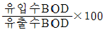
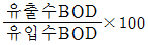
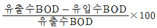
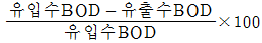
(정답률: 90%)
37. 급탕설비에 사용되는 안전장치에 속하지 않는 것은?
- 팽창관
- 팽창수조
- 사이렌서
- 안전밸브
(정답률: 84%)
38. 배수관에 관한 설명으로 옳은 것은?
- 욕조의 오버 플로관은 트랩의 하류에 접속한다.
- 수영장의 배수는 일반 배수계통에 직결해서는 안된다.
- 배수관에 부착하는 트랩은 이중으로 하는 편이 효과가 좋다.
- 자동차 차고의 바닥 배수는 오일 포집기의 하류에 접속한다.
(정답률: 59%)
39. 세정밸브식 대변기에 진공 방지기(vacuum breaker)를 설치하는 이유는?
- 사용수량을 줄이기 위하여
- 급수소음을 줄이기 위하여
- 급수오염을 방지하기 위하여
- 취기(냄새)를 방지하기 위하여
(정답률: 76%)
40. 다음 중 고층건물에서 급수설비의 조닝 목적과 가장 관계가 먼 것은?
- 공사비의 절감
- 소음과 진동의 방지
- 배관의 적절한 수압유지
- 기구 부속품의 파손방지
(정답률: 81%)
3과목: 공기조화설비
41. 다음 중 에어필터의 효율 측정법이 아닌 것은?
- 중량법
- 비색법
- 체적법
- DOP법
(정답률: 77%)
42. 사무실의 크기가 10m×10m×3m이고 재실자가 25명, 가스 난로의 CO2 발생량이 0.5m3/h일 때, 실내평균 CO2 농도를 1000ppm으로 유지하기 위한 최소 환기회수는? (단, 재실자 1인당의 CO2 발생량은 18L/h, 외기 CO2 농도는 500ppm 이다.)
- 약 3.68회/h
- 약 4.52회/h
- 약 5.38회/h
- 약 6.33회/h
(정답률: 43%)
43. 축열시스템에 관한 설명으로 옳지 않은 것은?
- 심야전력의 이용이 가능하다.
- 냉동기의 용량을 감소시킬 수 있다.
- 호텔의 공공부분과 같이 간헐운전이 심한 경우에는 적용할 수 없다.
- 빙축열 시스템은 냉각을 위한 냉동기, 축열을 위한 빙축열조, 외부와의 열교환을 위한 열교환기 등으로 구성된다.
(정답률: 81%)
44. 공조기부하에 펌프 및 배관 등의 열부하를 더한 것으로서 냉동기나 보일러 용량을 결정하는데 이용되는 것은?
- 외기부하
- 예열부하
- 열원부하
- 기간부하
(정답률: 77%)
45. 위치수두 10mAq, 압력수두 30mAq, 속도 2.5m/s로 관 속을 흐르는 물의 전수두는?
- 13.06m
- 13.24m
- 40.32m
- 42.54m
(정답률: 76%)
46. 공기조화기의 가열코일 입구와 출구에서 공기의 상태값이 변화하지 않는 것은?
- 엔탈피
- 상대습도
- 건구온도
- 절대습도
(정답률: 79%)
47. 냉방부하 중 일사에 의한 유리로부터의 취득열량에 관한 설명으로 옳지 않은 것은?
- 현열로만 구성되어 있다.
- 유리창의 방위에 따라 다르다.
- 유리창의 차폐계수가 클수록 취득열량은 크다.
- 북쪽 창은 햇빛이 닿지 않으므로 일사에 의한 취득열량은 생기지 않는다.
(정답률: 83%)
48. 건구온도 20℃, 절대습도 0.015kg/kg'인 습공기 6kg의 엔탈피는? (단, 공기 정압비열 1.01KJ/kg ㆍ K, 수증기 정압비열 1.85KJ/kg ㆍ K, 0℃에서 포화수의 증발잠열 2501KJ/kg)
- 58.24KJ
- 120.67KJ
- 228.77KJ
- 349.62KJ
(정답률: 54%)
49. 원형 덕트와 장방형 덕트의 환산식으로 옳은 것은? (단, d：원형 덕트의 직경 또는 환산직경, a：장방형 덕트의 장변길이, b：장방형 덕트의 단변길이)
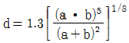
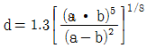
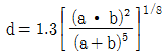
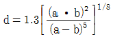
(정답률: 79%)
50. 다음 설명에 알맞은 풍량조절댐퍼는?
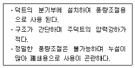
- 스플릿댐퍼
- 평행익형댐퍼
- 대향익형댐퍼
- 버터플라이댐퍼
(정답률: 80%)
51. 수증기를 만드는 원리에 따라 가습장치를 구분할 경우, 다음 중 수분무식에 속하는 것은?
- 전열식
- 모세관식
- 초음파식
- 적외선식
(정답률: 83%)
52. 용량이 400kW인 터보 냉동기에 순환되는 냉수량은? (단, 냉동기 입구의 냉수온도 12℃, 출구의 냉수온도 6℃, 물의 비열 4.2KJ/kg ㆍ K)
- 46.2m3/h
- 57.1m3/h
- 83.6m3/h
- 98.6m3/h
(정답률: 67%)
53. 압축식 냉동기의 구성요소 중 냉동의 목적을 직접적으로 달성하는 것은?
- 흡수기
- 증발기
- 발생기
- 응축기
(정답률: 75%)
54. 증기트랩 중 플로트 트랩에 관한 설명으로 옳지 않은 것은?
- 다량의 응축수를 처리할 수 있다.
- 동결의 우려가 있는 곳에 주로 사용된다.
- 증기해머에 의해 내부손상을 입을 수 있다.
- 자동 에어밴트가 설치되어 있어 공기배출능력이 우수하다.
(정답률: 83%)
55. 난방배관의 신축을 흡수하기 위해 사용되는 신축이 음쇠에 속하지 않는 것은?
- 루프형
- 리프트형
- 슬리브형
- 스위블형
(정답률: 77%)
56. 축류형 송풍기의 종류에 속하지 않는 것은?
- 베인형
- 후곡형
- 튜브형
- 프로펠러형
(정답률: 66%)
57. 공기조화방식 중 전공기방식의 일반적인 특징으로 옳지 않은 것은?
- 덕트 스페이스가 필요하다.
- 중간기에 외기냉방이 가능하다.
- 실내에 배관으로 인한 누수의 우려가 없다.
- 팬코일 유닛과 같은 기구의 설치로 실내 유효면적이 작아진다.
(정답률: 76%)
58. 그림과 같은 전열교환기의 전열효율을 올바르게 나타낸 것은? (단, 난방의 경우이며, X1, X2, X3, X4는 각 공기상태의 엔탈피를 나타낸다.)
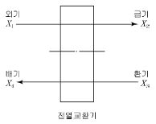
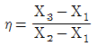
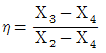
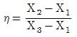
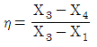
(정답률: 79%)
59. 공기여과장치에서 입구측의 오염도가 0.3mg/m3, 여과효율이 75% 이라 할 때, 공기여과장치를 통과하는 오염물질의 양은? (단, 공기여과장치를 통과하는 풍량은 500m3/h 이다.)
- 22.5mg/h
- 30.5mg/h
- 37.5mg/h
- 42.5mg/h
(정답률: 63%)
60. 습공기선도와 관련된 설명으로 옳지 않은 것은?
- 현열비는 전열량에 대한 현열량의 비율을 의미한다.
- 습공기선도에서 현열비 상태선이 수평일 때 현열비는 1이다.
- 습공기를 가습하였을 경우 노점온도는 낮아지나 상대습도는 높아진다.
- 열수분비는 습공기의 상태변화에 따른 전열량의 변화량과 절대습도의 변화량의 비를 나타낸다.
(정답률: 72%)
4과목: 소방 및 전기설비
61. 제3종 접지공사가 필요한 곳은?
- 고압계기용 변압기의 2차측 전로
- 특별고압계기용 변압기의 2차측 전로
- 400[V] 이상의 금속관 배선에 사용하는 관
- 고압전로에 시설하는 피뢰기 및 방출 보호통
(정답률: 63%)
62. 무접점 계전기에 사용되는 전력전자소자(트랜지스터, 다이오드)의 장점으로 옳지 않은 것은?
- 스위칭 속도가 빠르다.
- 전력소비가 대단히 작다.
- 잡음(noise)의 영향을 받지 않는다.
- 접점의 개폐동작으로 인한 마모현상이 없다.
(정답률: 77%)
63. 20[Ω]의 저항 4개를 병렬로 연결하였다. 220[V]의 전원에 연결하면 몇 [W]의 전력을 소비하는가?
- 880
- 2420
- 4840
- 9680
(정답률: 62%)
64. 다음 중 전기와 관련된 용어와 그 단위의 연결이 옳지 않은 것은?
- 자속：[Wb]
- 기자력：[V]
- 정전용량：[F]
- 리액턴스：[Ω]
(정답률: 74%)
65. 다음 중 자동제어에서 제어장치의 구성요소가 아닌 것은?
- 검출부
- 조절부
- 조작부
- 검파부
(정답률: 83%)
66. 분전반을 설치하는 전기샤프트(ES)에 관한 설명으로 옳지 않은 것은?
- 각 층마다 같은 위치에 설치한다.
- ES의 면적은 보 및 기둥 부분을 제외하고 산정한다.
- 설치장비 공급의 편리성을 우선하며 각 층의 모서리 부분에 설치한다.
- 전력용과 통신용 등으로 구분 설치하고, 적은 규모일 경우는 공용으로 사용한다.
(정답률: 84%)
67. 전기용접기의 주된 원리는 무엇을 응용한 것인가?
- 전자력
- 자기유도
- 전자유도
- 줄(Joule)열
(정답률: 78%)
68. 3상 유도 전동기의 회전 원리를 설명할 수 있는 법칙은?
- 브론델 법칙
- 플레밍의 왼손 법칙
- 플레밍의 오른손 법칙
- 앙페르의 오른나사 법칙
(정답률: 68%)
69. 스위치의 접촉점이나 전선의 연결부분에 접촉저항이 크면 전류흐름에 장애가 생긴다. 이러한 장애를 방지하기 위한 방법과 가장 관계가 먼 것은?
- 접촉점을 대지와 접지시킨다.
- 스위치의 접촉점을 잘 닦는다.
- 압력을 가해서 접촉력을 높인다.
- 전선의 연결부분 개소를 가능한 줄인다.
(정답률: 67%)
70. 건축물에 설치되는 전기설비의 에너지절약 방안에 관한 설명으로 옳지 않은 것은?
- 승강기는 인버터(VVVF)제어방식으로 직접 제어한다.
- 대용량의 유도전동기는 전전압 기동방식을 채택한다.
- 변압기는 저손실형으로 몰드변압기 또는 아몰퍼스변압기를 사용한다.
- 대형 사무실인 경우 창측 조명기구는 광센서로 제어 하거나 별도의 제어회로를 구성한다.
(정답률: 59%)
71. 다음 그림과 같은 접점회로의 논리식은?
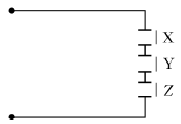
- X + Y + Z
- X ㆍ Y ㆍ Z
- X ㆍ Y + Z
- 1/X + Y + Z
(정답률: 79%)
72. 접지저감제의 구비조건에 속하지 않는 것은?
- 지속성이 있을 것
- 전기적으로 부도체일 것
- 전극을 부식시키지 않을 것
- 토양을 오염시키지 않을 것
(정답률: 74%)
73. 변압기에서 입력전력에 대한 출력전력의 비율을 의미하는 것은?
- 부하율
- 수용률
- 역률
- 효율
(정답률: 68%)
74. 3상 Y결선에서 선간전압이 220[V]인 3상 교류의 상전압은?
- 127[V]
- 220[V]
- 381[V]
- 440[V]
(정답률: 64%)
75. 조명설계의 순서로 가장 알맞은 것은?
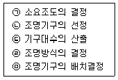
- ㉠-㉣-㉡-㉢-㉤
- ㉤-㉢-㉠-㉡-㉣
- ㉣-㉡-㉠-㉤-㉢
- ㉡-㉠-㉣-㉢-㉤
(정답률: 90%)
76. 엔탈피 제어에 관한 설명으로 옳지 않은 것은?
- 환절기에 사용하면 에너지 절약효과가 크다.
- 통상적으로 부하재설정제어와 같이 사용한다.
- 외기를 실내에 공급하여 냉방부하를 줄이는 방식이다.
- 사람의 출입이 이용시간대에 따라서 크게 변화하는 백화점 등에 사용하면 효과가 크다.
(정답률: 59%)
77. 납축전지가 방전되면 양(+)극은 어떠한 물질로 되는 가?
- Pb
- PbSO4
- PbO
- PbO2
(정답률: 76%)
78. 변압기에서 철심(core)이 하는 역할은?
- 자속의 이동통로
- 전류의 이동통로
- 전압의 이동통로
- 전력량의 이동통로
(정답률: 78%)
79. 저항 R과 인덕턴스 L의 병렬회로에 있어서 전류와 전압의 위상관계는?
- 전류는 전압보다 뒤진다.
- 전류와 전압은 동상이다.
- 전류는 전압보다 45°앞선다.
- 전류는 전압보다 90°앞선다.
(정답률: 62%)
80. 알칼리 축전지에 관한 설명으로 옳지 않은 것은?
- 공칭 전압은 1.2[V/셀]이다.
- 극판의 기계적 강도가 약하다.
- 과방전, 과전류에 대해 강하다.
- 부식성 가스가 발생하지 않는다.
(정답률: 62%)
5과목: 건축설비관계법규
81. 방염성능기준 이상의 실내장식물 등을 설치하여야 하는 특정소방대상물에 속하는 것은? (단, 층수가 10층인경우)
- 아파트
- 실내수영장
- 호텔
- 기숙사
(정답률: 64%)
82. 위험물 저장 및 처리시설에 설치하는 피뢰설비는 한국산업표준이 정하는 피뢰시스템레벨이 최소 얼마 이상이어야 하는가?
- Ⅰ
- Ⅱ
- Ⅲ
- Ⅳ
(정답률: 69%)
83. 다음 중 내화구조에 해당하지 않는 것은?
- 철골철근콘크리트조의 계단
- 두께 8cm인 철근콘크리트조의 바닥
- 철재로 보강된 유리블록으로 된 지붕
- 작은 지름이 25cm인 철근콘크리트조의 기둥
(정답률: 73%)
84. 다음은 건축법상 건축신고와 관련된 기준 내용이다. ( )안에 속하지 않는 것은?
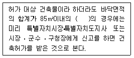
- 신축
- 증축
- 개축
- 재축
(정답률: 71%)
85. 공동 소방안전관리자 선임대상 특정소방대상물에 속하지 않는 것은?
- 판매시설 중 도매시장
- 판매시설 중 소매시장
- 복합건축물로서 층수가 5층 이상인 것
- 복합건축물로서 연면적이 3,000m2 이상인 것
(정답률: 60%)
86. 비상경보설비를 설치하여야 하는 특정소방대상물의 연면적 기준은? (단, 지하가 중 터널 또는 사람이 거주하지 않거나 벽이 없는 축사는 제외)
- 100m2 이상
- 200m2 이상
- 300m2 이상
- 400m2 이상
(정답률: 62%)
87. 건축물의 지하층에서 거실의 바닥면적의 합계가 최소 얼마 이상인 층의 경우, 환기설비를 설치하여야 하는가?
- 500m2
- 1,000m2
- 1,500m2
- 2,000m2
(정답률: 70%)
88. 연면적의 합계가 3,000m2인 업무시설에 중앙집중 냉방설비를 설치하는 경우, 해당 건축물에 소요되는 주간 최대냉방부하의 얼마 이상을 수용할 수 있는 용량의 축냉식 또는 가스를 이용한 중앙집중 냉방방식으로 설치하여야 하는가?
- 50%
- 60%
- 70%
- 80%
(정답률: 65%)
89. 건축물의 용도변경과 관련하여 산업 등의 시설군에 속하는 건축물의 세부용도가 아닌 것은?
- 운수시설
- 발전시설
- 장례식장
- 창고시설
(정답률: 51%)
90. 지능형 건축물의 인증에 관한 설명으로 옳지 않은 것은?
- 지능형 건축물 인증기준에는 인증표시 홍보기준, 유효기간 등의 사항이 포함된다.
- 산업통상자원부장관은 지능형 건축물의 인증을 위하여 인증기관을 지정할 수 있다.
- 국토교통부장관은 지능형 건축물의 건축을 활성화하기 위하여 지능형 건축물 인증제도를 실시한다.
- 허가권자는 지능형 건축물로 인증 받은 건축물에 대하여 조경설치면적을 100분의 85까지 완화하여 적용할수 있다.
(정답률: 69%)
91. 초고층 건축물의 피난・안전을 위하여 지상층으로부터 최대 30개 층마다 설치하는 대피공간을 의미하는 것은?
- 무창층
- 개방공간
- 안전지대
- 피난안전구역
(정답률: 87%)
92. 건축법상 아파트는 주택으로 쓰는 층수가 최소 얼마이상인 주택을 말하는가?
- 3개 층
- 5개 층
- 7개 층
- 10개 층
(정답률: 87%)
93. 층수가 10층이며, 각층의 거실 면적이 1,000m2인 종합병원에 설치하여야 하는 승용승강기의 최소 대수는? (단, 8인승 승용승강기인 경우)
- 3대
- 4대
- 5대
- 6대
(정답률: 57%)
94. 급수, 배수의 건축설비를 건축물에 설치하는 경우 건축기계설비기술사 또는 공조냉동기계기술사의 협력을 받아야 하는 대상 건축물에 속하지 않는 것은?
- 연립주택
- 판매시설로서 해당 용도에 사용되는 바닥면적의 합계가 2,000m2인 건축물
- 의료시설로서 해당 용도에 사용되는 바닥면적의 합계가 2,000m2인 건축물
- 숙박시설로서 해당 용도에 사용되는 바닥면적의 합계가 2,000m2인 건축물
(정답률: 70%)
95. 다음 소방시설 중 경보설비에 속하는 것은?
- 비상조명등
- 비상방송설비
- 비상콘센트설비
- 무선통신보조설비
(정답률: 78%)
96. 다음은 건축법상 건축허가에 관한 기준 내용이다. ( )안에 알맞은 것은?
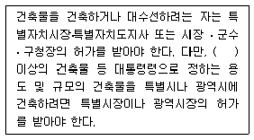
- 6층
- 11층
- 16층
- 21층
(정답률: 79%)
97. 신축 또는 리모델링하는 공동주택의 세대수가 최소얼마 이상인 경우 시간당 0.5회 이상의 환기가 이루어질수 있도록 자연환기설비 또는 기계환기설비를 설치하여 야 하는가?
- 50세대
- 100세대
- 150세대
- 200세대
(정답률: 81%)
98. 건축물의 에너지절약설계기준에 따른 야간단열장치의 총열관류저항 기준은?
- 0.2m2 ㆍ K/W 이상
- 0.3m2 ㆍ K/W 이상
- 0.4m2 ㆍ K/W 이상
- 0.5m2 ㆍ K/W 이상
(정답률: 78%)
99. 건축물의 출입구에 설치하는 회전문에 관한 기준 내용으로 옳지 않은 것은?
- 계단이나 에스컬레이터로부터 1m 이상의 거리를 둘것
- 출입에 지장이 없도록 일정한 방향으로 회전하는 구조로 할 것
- 회전문의 회전속도는 분당회전수가 8회를 넘지 아니하도록 할 것
- 회전문의 중심축에서 회전문과 문틀 사이의 간격을 포함한 회전문날개 끝부분까지의 길이는 140cm 이상이 되도록 할 것
(정답률: 78%)
100. 건축물의 지붕을 평지붕으로 하는 경우 건축물의 옥상에 헬리포트를 설치하거나 헬리콥터를 통하여 인명등을 구조할 수 있는 공간을 확보하여야 하는 대상 건축물 기준으로 옳은 것은?
- 층수가 6층 이상인 건축물로서 6층 이상인 층의 바닥면적의 합계가 5,000m2 이상인 건축물
- 층수가 6층 이상인 건축물로서 6층 이상인 층의 바닥적의 합계가 10,000m2 이상인 건축물
- 층수가 11층 이상인 건축물로서 11층 이상인 층의 바닥면적의 합계가 5,000m2 이상인 건축물
- 층수가 11층 이상인 건축물로서 11층 이상인 층의 바닥면적의 합계가 10,000m2 이상인 건축물
(정답률: 81%)